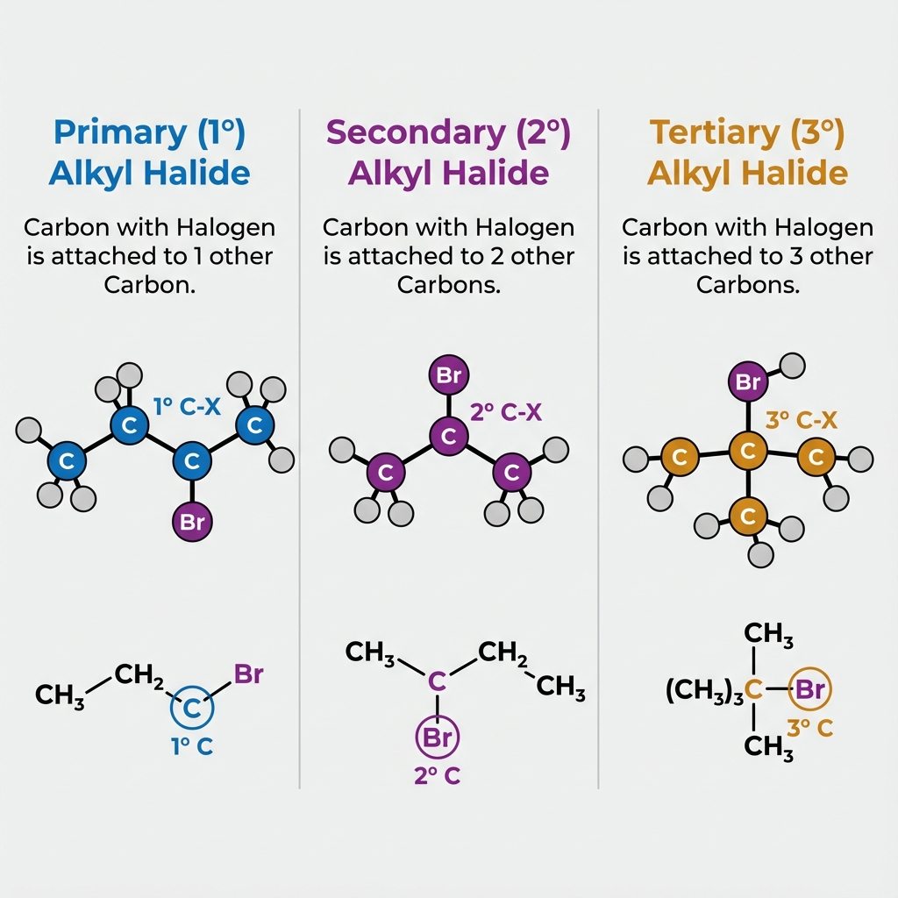
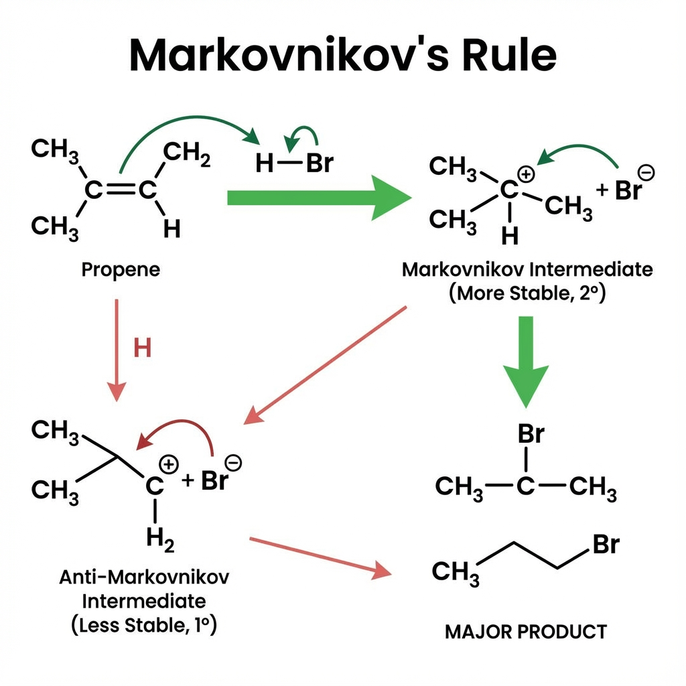

هاليدات الألكيل (Alkyl Halides)
هاليدات الألكيل هي مركبات عضوية نحصل عليها من الألكانات باستبدال ذرة هيدروجين واحدة أو أكثر بذرة هالوجين مثل الفلور أو الكلور أو البروم أو اليود، وتكتب صيغتها العامة على الشكل R–X حيث R مجموعة ألكيلية و X ذرة هالوجين.
رسم تخطيطي لهاليد ألكيل بسيط

صورة تصورية لجزيء RX توضح استبدال H في الألكان بذرة هالوجين.
تصنيف هاليدات الألكيل
يُقسَّم هاليد الألكيل اعتماداً على نوع ذرة الكربون التي تحمل الهالوجين، هل هي مرتبطة بكربون واحد أم اثنين أم ثلاثة، إلى أولي وثانوي وثالثي.
هاليد ألكيل أولي (1°)
تكون ذرة الكربون المرتبطة بالهالوجين متصلة مباشرة بذرة كربون واحدة فقط مثل CH₃–CH₂–X.
هاليد ألكيل ثانوي (2°)
تكون ذرة الكربون التي تحمل X مرتبطة بذرتي كربون، كما في الصيغة العامة R–CH(X)–R.
هاليد ألكيل ثالثي (3°)
تكون ذرة الكربون المرتبطة بالهالوجين متصلة بثلاث ذرات كربون أخرى، ولذلك تسمى كربوناً ثالثياً.
مخطط يوضح الأولي والثانوي والثالثي
ملاحظة مهمة
لا يوجد هاليد ألكيل رباعي لأن الكربون الرباعي مشغول بأربع روابط تساهمية، ولا يبقى له فراغ ليرتبط بذرة هالوجين إضافية.
تسمية هاليدات الألكيل
تتبع تسمية هاليدات الألكيل قواعد IUPAC؛ نختار أطول سلسلة كربونية، نعطيها اسم ألكان، نرقم من الطرف الأقرب للهالوجين، ثم نكتب رقم واسم الهالوجين متبوعاً باسم الألكان.
- اختر أطول سلسلة كربونية وسمِّها كألكان عادي.
- رقِّم السلسلة من الطرف الأقرب لذرة الهالوجين X.
- اكتب رقم موقع X متبوعاً باسم الهالوجين: كلورو (Cl)، برومو (Br)، يودو (I)، فلورو (F).
- عند وجود أكثر من تفرع أو أكثر من هالوجين، ترتَّب حسب الأبجدية وتُذكر أعدادها (di, tri...).
| الصيغة البنائية (مبسطة) | الاسم النظامي |
|---|---|
| CH₃–CH₂–CH₂–Cl | 1-كلورو بروبان |
| CH₃–CH(Br)–CH₃ | 2-برومو بروبان |
| CH₃–CH(Cl)–CH₂–CH₃ | 2-كلورو بيوتان |
| CH₃–C(Cl)(CH₃)–CH₃ | 2-كلورو-2-مثيل بروبان |
ورقة تدريب على تسمية هاليدات الألكيل

الخواص الفيزيائية لهاليدات الألكيل
تتدرج الحالة الفيزيائية لهاليدات الألكيل مع زيادة عدد ذرات الكربون كما تتأثر ذوبانيتها وقطبيتها بوجود الهالوجين المرتبط بذرة الكربون.
- هاليدات الألكيل ذات السلاسل القصيرة مثل CH₃Cl و CH₃Br تكون غازات في درجة حرارة الغرفة.
- مع زيادة عدد ذرات الكربون تتحول إلى سوائل عديمة اللون، والأطول (أكثر من ≈ 18C) تكون مواد صلبة.
- هاليدات الألكيل لا تذوب عادة في الماء، لكنها تذوب في المذيبات العضوية مثل الإيثانول والبنزين.
- سبب عدم ذوبانها في الماء هو ضعف قدرتها على تكوين روابط هيدروجينية قوية مع جزيئات الماء.
مخطط يوضح تغير الحالة الفيزيائية مع عدد ذرات الكربون

تحضير هاليدات الألكيل من الألكينات
من الطرق الشائعة لتحضير هاليدات الألكيل إضافة هاليد الهيدروجين HX إلى الألكينات بحيث يكون عدد ذرات الكربون في الناتج مساوياً لعددها في الألكين المستخدم.
1. إضافة HX إلى ألكين متناظر
في الألكين المتناظر تكون ذرات الكربون على طرفي الرابطة المزدوجة تحمل العدد نفسه من ذرات الهيدروجين، لذلك يمكن توزيع H و X بأي صورة ويعطي الناتج نفسه.
CH₂ = CH₂ + HBr → CH₃–CH₂Br (برومو إيثان)

2. إضافة HX إلى ألكين غير متناظر (قاعدة ماركوفنيكوف)
في الألكين غير المتناظر تضاف ذرة الهيدروجين إلى الكربون الأكثر احتواءً على ذرات الهيدروجين، بينما تضاف X إلى الكربون الأقل هيدروجيناً، وهذا ما تُعرَف بقاعدة ماركوفنيكوف.
CH₃–CH = CH₂ + HBr → CH₃–CH(Br)–CH₃ (2-برومو بروبان)
.png)
رسم يوضح قاعدة ماركوفنيكوف
هاليدات الألكيل متعددة الهالوجين
يمكن استبدال أكثر من ذرة هيدروجين في الألكان بذرات هالوجين لتكوين هاليدات ثنائية أو ثلاثية أو رباعية الهالوجين، وقد تكون الذرات المستبدلة على نفس الكربون أو على كربونات مختلفة.
مثال: رباعي كلورو ميثان
CCl₄ (رباعي كلورو ميثان)
مثال: ثلاثي كلورو ميثان
CHCl₃ (ثلاثي كلورو ميثان)
مقارنة بين هاليدات أحادية ومتعددة الهالوجين

أهم التفاعلات الكيميائية لهاليدات الألكيل
تمتاز هاليدات الألكيل بقابلية عالية لتفاعلات التعويض النيوكليوفيلي وسحب HX لتكوين الألكينات، إضافة إلى قدرتها على تكوين كواشف غرينيار المهمة في تحضير مركبات عضوية أخرى.
1. تفاعل هاليد الألكيل مع KOH المائي (تحويله إلى كحول)
يتفاعل هاليد الألكيل مع هيدروكسيد البوتاسيوم المائي باستبدال ذرة الهالوجين بمجموعة (OH) لتكوين كحول مناسب مع ملح البوتاسيوم للهاليد.
R–X + KOH(aq) → R–OH + KX CH₃–CH₂Br + KOH(aq) → CH₃–CH₂OH + KBr
.png)
2. تفاعل هاليد الألكيل مع KOH الكحولي (سحب HX وتكوين ألكين)
في الوسط الكحولي يعمل KOH على سحب HX من هاليد الألكيل لتكوين رابطة مزدوجة، أي يتحول المركب إلى ألكين.
CH₃–CH₂Br + KOH(alc) → CH₂=CH₂ + KBr + H₂O
.png)
3. تكوين كاشف غرينيار مع فلز المغنيسيوم
يتفاعل هاليد الألكيل مع المغنيسيوم في مذيب أثيري جاف لتكوين مركب من نوع R–MgX يُسمَّى كاشف غرينيار، وهو كاشف فعال في بناء سلاسل كربونية جديدة.
R–Br + Mg → R–MgBr CH₃–CH₂Br + Mg → CH₃–CH₂–MgBr

فيديو توضيحي لتفاعلات هاليدات الألكيل
استعرض في الفيديو خطوات تحضير هاليدات الألكيل وتفاعلاتها مع KOH والمغنيسيوم.
اختبر نفسك في هاليدات الألكيل
أجب عن الأسئلة التالية لمراجعة مفاهيم التصنيف والتسمية والتحضير لهاليدات الألكيل.
! جرّب حظّك
اكتب الصيغة أو الاسم الصحيح حسب ما يطلبه السؤال ثم اضغط إرسال.